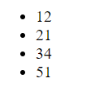
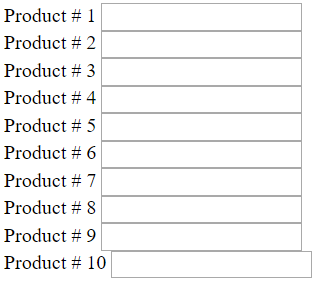
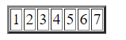

Завдання -2
Поступово генерувати 100 випадкових чисел від 1 до 1000. Підрахувати яких чисел більше: парних чи непарних.
Завдання -1
Вивести на екран номери місяців весни і літа (від 3 до 8)
Завдання 0
Вивести на екран 8 кнопок з написом “Hello”.
Завдання 1
Вивести з використанням циклів маркований список з випадковими числами (1-100). Кількість випадкових
чисел вводиться користувачем. Приклад:

Завдання 2
Створити 10 елементів для введення цін продуктів

Завдання 3
Вивести таблицю з одним рядком і 7 стовпцями.

Завдання 4
Задача 4. Вивести таблицю з 3 рядків і 7 стовпців

Завдання 5
Вивести таблицю

Завдання 8
Користувач загадує число. За 3 спроби комп’ютер намагається вгадати число користувача (використати confirm).
Завдання 11
Знайти суму 5 непарних чисел, що знаходяться між заданими користувачем числами.